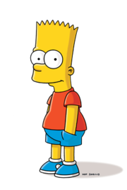

Bart Simpson
Bartholomew JoJo "Bart" Simpson (born April 1[7] or February 23[8]) is the mischievous, rebellious, misunderstood, disruptive and "potentially dangerous" oldest child of the Simpson family in The Simpsons. He is the only son of Homer and Marge Simpson, and the older brother of Lisa and Maggie. He also has been nicknamed "Cosmo", after discovering a comet in "Bart's Comet". Bart has also been on the cover on numerous comics, such as "Critical Hit", "Simpsons Treasure Trove #11", and "Winter Wingding". Bart also has a 100-issue comic series entitled the Simpson Comics Presents Bart Simpson. Bart is loosely based on Matt Groening and his older brother, Mark Groening.
―Bart's catchphrase and first words
―Bart's second catchphrase
―Bart's earlier catchphrase